Sanaroo - Instructions
www.chris-creed.com
Thank you for downloading Sanaroo. Please read the instructions below for details on how to install and configure the Sanaroo template.
Do you use WordPress? Check out the Sanaroo WordPress Theme.
Table of Contents
1. Installation
You will notice that there are several files included in the "sanaroo.zip" file you downloaded. You need to upload all of these files (except for the "instructions" and the "photoshop" folder) to the root directory of your website (typically something like public_html/) using your FTP client of choice.
Once you have uploaded the files you should be able to view the template online by visiting your site's URL (i.e. http://www.yoursite.com/).
2. Header
The header area contains the site title, subtitle, and navigation area - to edit the logo name and subtitle you'll need to edit lines 29 & 30 in the index.html file:
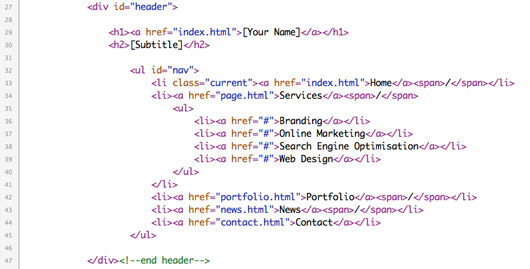You'll also need to edit the navigation area to include all the pages that you want on your site - you can do this between lines 32-45.
3. Front Page
The front page template is comprised of a number of different sections including a featured section, an area for your latest projects, and a section where you can provide further introductory information about your business and services.
Featured Section
The featured section contains a title, an image to the left, and some content on the right:
To edit these details you'll need to change lines 51-59 in the index.html file:
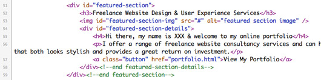The image that you use needs to be 375x225px in size.
Latest Projects
The next section is the area where you can display some of your latest projects:
To edit the projects displayed you'll need to edit lines 63-80 in the index.html file:
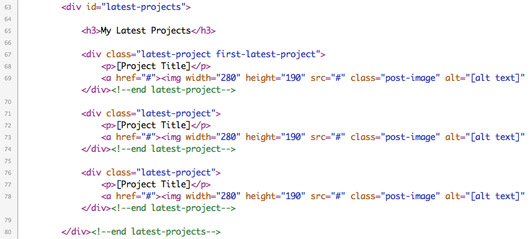You need to provide a title for each project along with thumbnail image - the images that you use here need to be 280x190px in size.
Additional Information
Below the latest projects section is an area where you can provide additional details about your business:
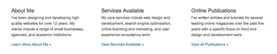To edit what's displayed here you'll need to edit lines 84-104 in the index.html file:
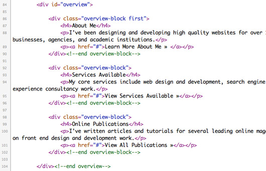Ensure that you provide a title for each section along with the general content that you would like to be displayed.
Footer
To edit the footer you'll need to edit lines 110-113 in the footer.php file:
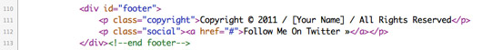4. Portfolio
The Portfolio template contains a range of images that represent portfolio items:
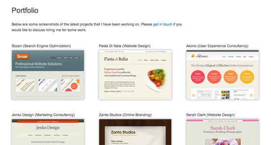Add A Portfolio Item
To create a portfolio you need to edit the portfolio.html file - an example of a portfolio item can be found on lines 58-61:
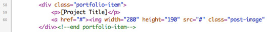Simply copy and paste this code to create a new portfolio item - in addition to adding a title for the portfolio item, you'll also need to provide a URL to an image that is 280x190px in size (this is what will be displayed on the portfolio page). You'll also need to provide a link to a page that has further details about the project (i.e. a page that makes use of the project template - described below).
Project Template
To add details about a portfolio item you'll need to make use of the Project template - this template contains details about the project on the left along with a larger screenshot on the right hand side.
The "project.html" file includes the code for this template - you can edit the screenshot that's displayed on line 52. You can change the text related to the project from line 57.
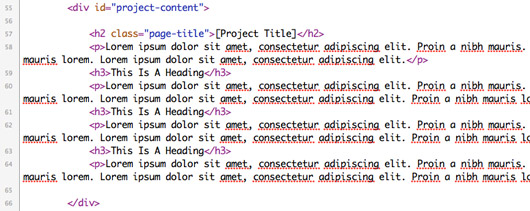5. Standard Page
The standard page template has a content area to the left and and contact sidebar to the right (the page.html file included in the download uses the standard template).
You can edit the main content of the template from line 52. You can change the details on the contact sidebar in lines 64-77.
6. News
The News template lists all of the articles that you have written. You can see how to add a new article by looking at lines 53-59 in the news.html file:
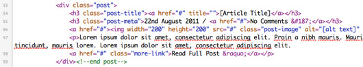You'll need to provide an article title, a URL to an image that's 125x125px in size (i.e. the article thumbnail), and an an overview of the article. You will also need to provide a link to the main article page so that when visitors click on either the article link or on the "Read Full Post" link they will be taken to the full article.
7. Contact Page
The Contact template contains a form on the left and a contact details sidebar on the right (contact.html). To get the contact form working you'll need to edit the scripts/contact-process.php file - in particular, on line 33 you need to specify your contact email address and then save the file.
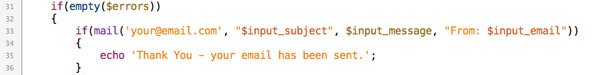This will ensure that all email is sent to the address that you have specified.